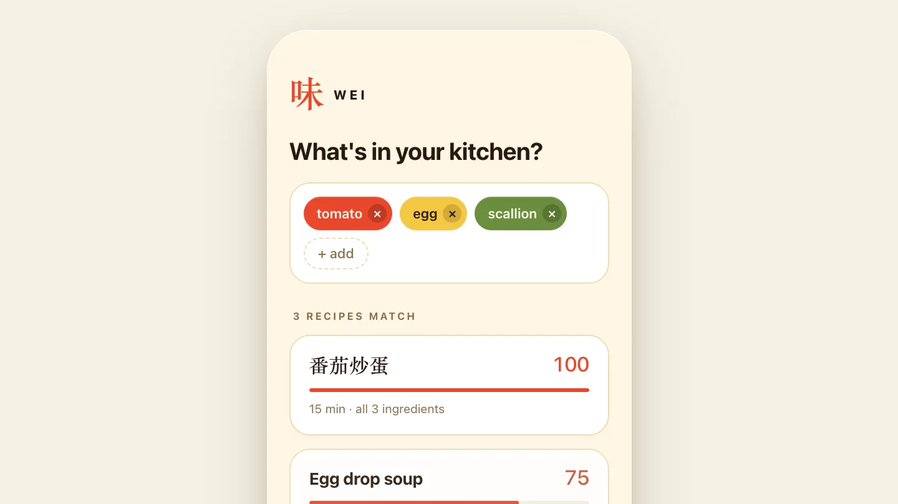
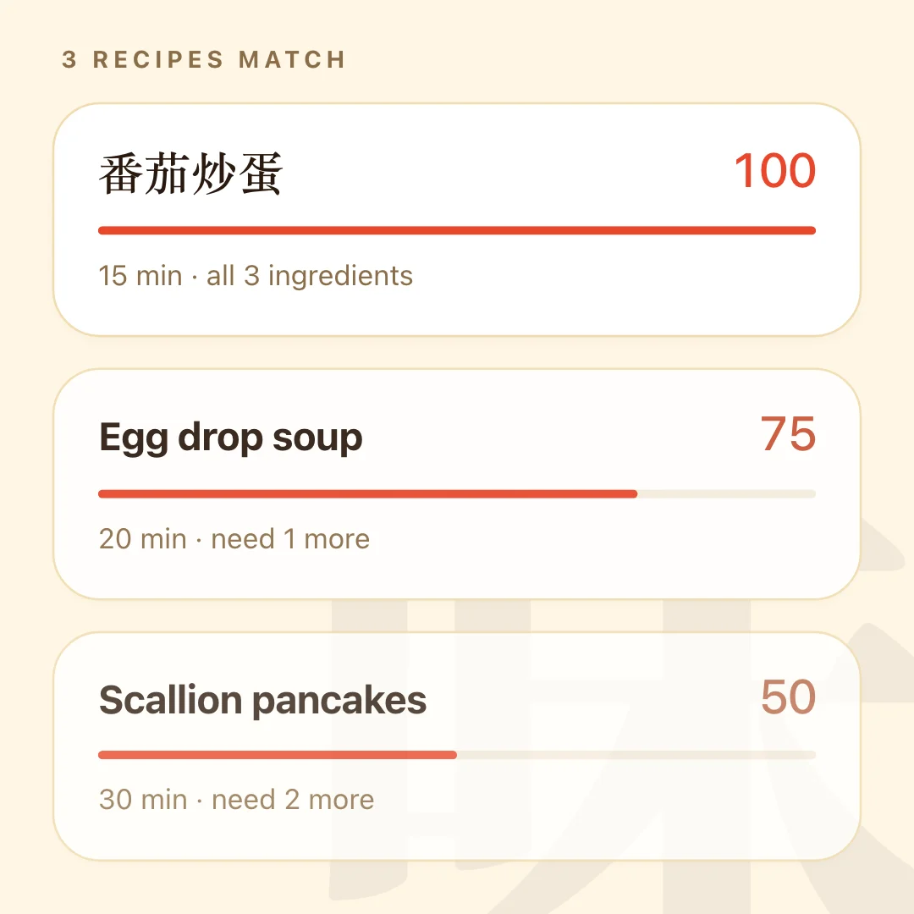
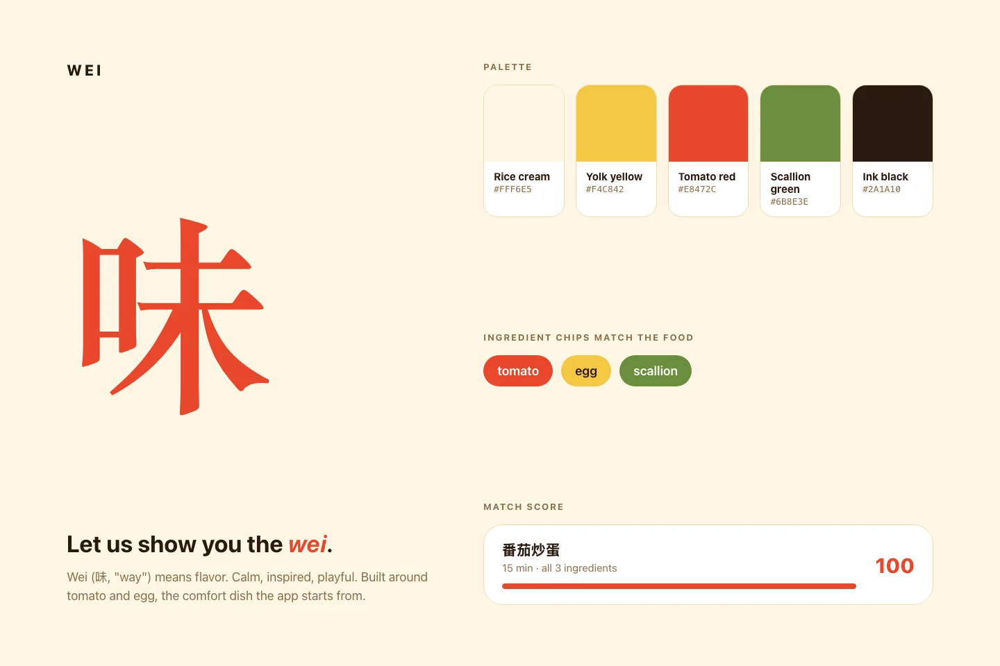

Wei
A recipe app that starts from what is in your kitchen and ranks recipes by how much of each one you can already cook.
Product Design · UX · Brand · 2025 · In Stealth

Wei is in stealth and not built yet. This page covers the product thinking and the prototype, and leaves out launch details.
The problem
Most recipe apps start with a recipe and send you shopping. On a weeknight it usually goes the other way, with food in the fridge and no plan. Wei starts from the fridge. You list what you have, and it shows which of your saved recipes you can make, ranked by how much of each one is already in the kitchen.
Who it is for
Version 1 is for a single household, planning dinner on a phone in the kitchen. A small, known group meant the app could skip accounts and most settings and put its effort into one moment, opening the app and seeing dinner.
The matcher is the home screen
The matcher is the reason to open the app, so it is the first screen after sign-in. Ingredients you add become chips colored like the food, tomato red, egg yellow and scallion green, so the list reads at a glance, and each chip has its own remove button.
A score you can act on
A recipe's score is the share of its ingredients you already have. Three of three is 100 and three of four is 75. Each row also turns the number into one plain line, such as "15 min · all 3 ingredients" or "30 min · need 2 more", because that line tells you whether dinner needs a trip to the store. Each row below the top match is a little paler than the one above, so the best option is the strongest thing on the screen.

Matching in version 1 is a plain text match. "Tomato" finds recipes that use tomatoes, and "soy sauce" matches only soy sauce. Salt and oil count like any other ingredient, so a recipe can lose points for things every kitchen has. Letting the matcher ignore staples is on the version 2 list, and the brief says to revisit the matching itself only if results turn out noisy.
Every state, written before the build
Seven screens are specified. They are the password screen, the matcher, recipe detail, add recipe, the recipe bank, the shopping list and settings. The matcher alone has four states.
- First launch, with no recipes saved. There is nothing to match yet, so the screen says "Welcome. Let us show you the wei." It shows three short cards on what Wei does and offers one button, "Add your first recipe".
- No ingredients yet. "What's in your kitchen?" with recently used ingredients as chips you can tap to add.
- Typing. Suggestions come from your own recipes, each with the number of recipes that use it, and you can add the typed word as a new ingredient.
- Ingredients added. The ranked list shown above.
Every main screen also has a loading and an error state. Loading shows soft cream placeholder shapes, and a failed load says "Couldn't load. Tap to retry." Deleting a recipe asks for confirmation. Signing out does not, because you can sign straight back in. An empty shopping list says "Nothing to buy." If two recipes need the same ingredient, the list shows one row that names both.
One password for version 1
Accounts are the most complex part of a multi-user app, and one household does not need them yet. Version 1 opens on a single shared password, remembers you after that, and has a sign-out button. The brief also records how accounts get added later. Every table gets a household ID, existing data moves into one household, and real sign-in goes on top. In the build order, the password screen comes last, after the app works.
Less typing on a phone
Typing a whole recipe on a phone is slow, so two small AI steps take some of the typing away. Type a line like "1 tbsp soy sauce" and one step splits it into amount, unit and ingredient, shown under the line where you can correct it. When an ingredient appears for the first time, another step files it under a grocery aisle, which the shopping list uses to group items. If the AI is unavailable, both keep the text as you typed it. On the same screen, difficulty is three buttons for easy, medium and hard, and time and servings open the number keyboard.
What I cut
The brief lists what version 1 leaves out, each with a reason, and sets the rule "when in doubt, cut features".
- Cook mode, a step-by-step view with timers. The steps sit on the recipe page instead, and cook mode is a version 2 feature.
- Importing a recipe from a link (version 1.5) or from a photo of a cookbook page (later).
- Recipe photos. Recipes work without them.
- Accounts and household sharing. One password covers version 1.
- A "cook again?" prompt, cut outright because Wei is for planning new meals. Tracking what you cooked waits for version 2.
- Ignoring staples when matching, merging quantities on the shopping list, notifications, themes and profile photos.
A brand from one dish
Wei is 味, pronounced "way", the Mandarin word for flavor, with a play on "the way". The app started from tomato and egg, 番茄炒蛋, a comfort dish, which is also the top match in the prototype. The palette is named after ingredients, from rice cream to ink black, and the same colors mark the ingredient chips. The character sits as a faint watermark on most screens and large on the password screen. The working tagline is "Let us show you the wei."

Result
The matcher exists as an interactive prototype. You can remove a chip, switch tabs and tap a recipe. The other six screens, their states, the data model, the matching formula, the two AI steps and a build order are in a build brief that a developer can start from.
What this means for your product
I start a first version from the one moment people open the app for, and design that screen first. I specify every state before anyone builds, and I write down what is cut and why. That gives a small team a document to build from, and a written list of what to add once people are using it.
Deliverables
- Product design and prototype
- Brand direction
- Build brief